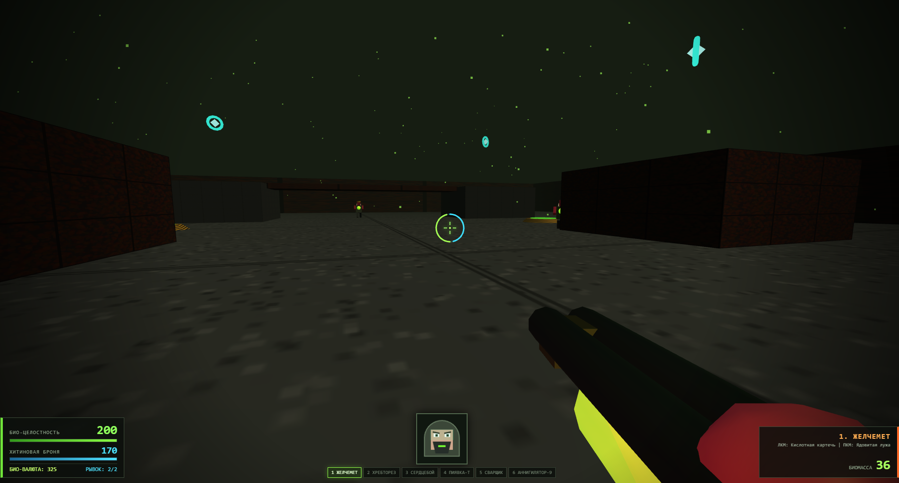
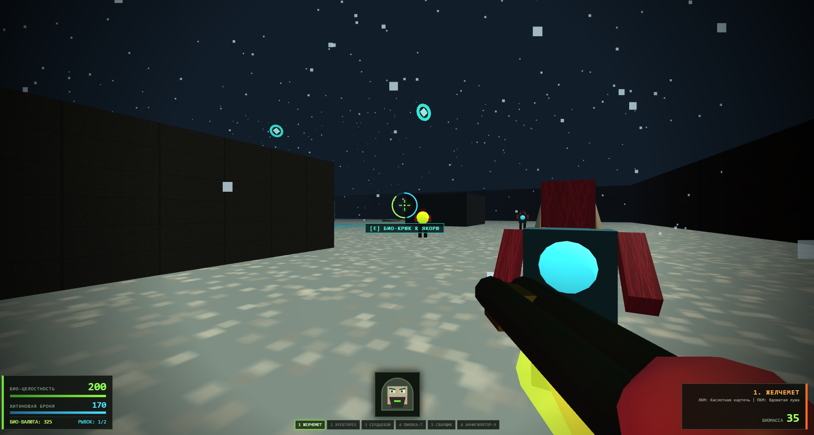

Быстрый олдскульный биопанк-шутер от первого лица прямо в браузере. 5 открытых арен, 6 видов мутировавшего оружия, реактивный крюк, добивания Glory Kill и финальный босс «Доменная Печь».
БИОШЛАК // NECROFORGE 2.0 — это динамичный 3D-шутер на WebGL, вдохновлённый классическим DOOM и современными арена-шутерами. Никаких загрузок и установок — открывай файл и врывайся в бой с живым реагирующим портретом оперативника в HUD и процедурным звуком.
Сражайся волнами на заражённых промышленных аренах, плавь броню танков кислотой, летай между платформами на Био-крюке и прокачивай тело в межволновой лавке «Био-Верстак».
Двойной прыжок, воздушные рывки с перезарядкой на прицеле, кислотные гейзеры-трамплины и притягивающий Био-крюк к парящим якорям — стоять на месте здесь смертельно.
Раненые мутанты загораются оранжевым — нажми [F], чтобы эффектно добить врага и выбить из него HP с боеприпасами. А твой оперативник в HUD следит за мышкой, скалится и получает трещины на шлеме.
Собирай зелёные кристаллы Био-валюты и трать их на усиление ног, второй заряд рывка, хитиновую броню и открытие разрушительного арсенала. Прогресс сохраняется автоматически.
Уворачивайся от цепного крюка босса, подставляй под него колонны, чтобы оглушить на 3 секунды, расплавь шлаковую броню Желчеметом и улетай на вертолёте с гранатой в замедленном времени.

🔍 Увеличить
🔍 Увеличить